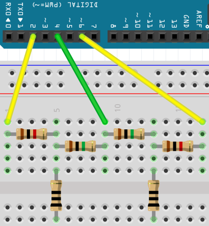

Capacitatieve sensoren les 3¶
Als je meerdere capacitatieve sensoren aan wilt sluiten, kun je twee pinnen per sensor gebruiken.
In deze les gaan we dat doen.
Stroomschema¶

Om een capacitatieve sensor te maken heb je twee weerstandjes nodig:
- Duizend Ohm (bruin, zwart, rood, goud)
- Een miljoen Ohm (bruin, zwart, groen, goud)
Tussen de twee weerstanden in kun je drukken en dan merkt de Arduino dat. Op het stroomschema staat er een weerstand van nul Ohm getekent.
Code¶
Als de bibliotheek is geinstalleerd, kunnen we een capacitatieve sensor maken:
#include <CapacitiveSensor.h>
const int pin_sensor_1 = 2;
const int pin_hulp = 4;
const int pin_sensor_2 = 6;
const int pin_led = 13;
CapacitiveSensor mijn_cap_sensor_1 = CapacitiveSensor(pin_hulp,pin_sensor_1);
CapacitiveSensor mijn_cap_sensor_2 = CapacitiveSensor(pin_hulp,pin_sensor_2);
void setup()
{
pinMode(pin_led,OUTPUT);
Serial.begin(9600);
}
void loop()
{
//Hoe hoger 'samples', hoe nauwkeuriger de sensor meet
const int samples = 30;
//Meet de waarde van de sensors
const int waarde_1 = mijn_cap_sensor_1.capacitiveSensor(samples);
const int waarde_2 = mijn_cap_sensor_2.capacitiveSensor(samples);
//Laat de waarde zien in de Serial Monitor
Serial.println(waarde_1);
Serial.println(waarde_2);
//De drempelwaarde bepaalt wanneer het programma denkt dat je de sensor aanraakt
// - te laag: dan zal het programma vaker denken dat je de sensor aanraakt, terwijl je dat niet doet
// - te hoog: dan zal het programma minder vaak denken dat je de sensor aanraakt, terwijl je dat wel doet
const int drempelwaarde = 100;
//Als je de sensor aanraakt, gaat het LEDje op pin 'pin_led' branden
const bool is_hoog_1 = waarde_1 >= drempelwaarde;
const bool is_hoog_2 = waarde_2 >= drempelwaarde;
digitalWrite(pin_led,is_hoog_1 && is_hoog_2 ? HIGH : LOW);
delay(100);
}
Dit is wat alles betekent:
const int pin_sensor_1 = 2: Hiermee zeg je: 'Lieve Arduino, onthoudt een heel getal (int). Ik noem dat hele getalpin_sensor_1. De begin waarde vanpin_sensor_1is twee.pin_sensor_1kan niet veranderen (const)'const int pin_hulp = 4: Hiermee zeg je: 'Lieve Arduino, onthoudt een heel getal (int). Ik noem dat hele getalpin_hulp. De begin waarde vanpin_hulpis vier.pin_hulpkan niet veranderen (const)'const int pin_sensor_2 = 6: Hiermee zeg je: 'Lieve Arduino, onthoudt een heel getal (int). Ik noem dat hele getalpin_sensor_2. De begin waarde vanpin_sensor_2is zes.pin_sensor_2kan niet veranderen (const)'const int pin_led = 13: Hiermee zeg je: 'Lieve Arduino, onthoudt een heel getal (int). Ik noem dat hele getalpin_led. De begin waarde vanpin_ledis dertien.pin_ledkan niet veranderen (const)'CapacitiveSensor mijn_cap_sensor_1 = CapacitiveSensor(pin_hulp_1,pin_sensor_1): Hiermee zeg je: 'Lieve Arduino, onthoudt een CapacitiveSensor. Ik noem die CapacitiveSensormijn_cap_sensor_1. De begin waarde vanmijn_cap_sensorisCapacitiveSensor(pin_hulp,pin_sensor_1)'.CapacitiveSensor mijn_cap_sensor_2 = CapacitiveSensor(pin_hulp_2,pin_sensor_2): Hiermee zeg je: 'Lieve Arduino, onthoudt een CapacitiveSensor. Ik noem die CapacitiveSensormijn_cap_sensor_2. De begin waarde vanmijn_cap_sensor_2isCapacitiveSensor(pin_hulp,pin_sensor_2)'.void setup() {}: desetupfunction zorgt ervoor dat alles tussen de accolades ({en}) een keer gedaan wordtpinMode(pin_led, OUTPUT): 'Lieve Arduino, het soort pin (pinMode) datpin_ledis, is een uitgang (OUTPUT)'Serial.begin(9600): 'Lieve Arduino, praat met een snelheid van 9600 tekens per seconde met de seriele monitor'void loop() {}: defunctionfunction zorgt ervoor dat alles tussen de accolades ({en}) de rest van de tijd herhaald wordtconst int samples = 30: Hiermee zeg je: 'Lieve Arduino, onthoudt een heel getal (int). Ik noem dat hele getalsamples. De begin waarde vansamplesis dertig.sampleskan niet veranderen (const)'const int waarde_1 = mijn_cap_sensor_1.capacitiveSensor(samples): Hiermee zeg je: 'Lieve Arduino, onthoudt een heel getal (int). Ik noem dat hele getalwaarde_1. De begin waarde vanwaarde_1is wat je leest uit de eerste capacitatieve sensor (mijn_cap_sensor_1.capacitiveSensor(samples)).waarde_1kan niet veranderen (const)'const int waarde_2 = mijn_cap_sensor_2.capacitiveSensor(samples): Hiermee zeg je: 'Lieve Arduino, onthoudt een heel getal (int). Ik noem dat hele getalwaarde_2. De begin waarde vanwaarde_2is wat je leest uit de tweede capacitatieve sensor (mijn_cap_sensor_2.capacitiveSensor(samples)).waarde_2kan niet veranderen (const)'Serial.println(waarde_1): 'Lieve Arduino, laat de waarde vanwaarde_1op de seriele monitor zien'Serial.println(waarde_2): 'Lieve Arduino, laat de waarde vanwaarde_2op de seriele monitor zien'const int drempelwaarde = 100: Hiermee zeg je: 'Lieve Arduino, onthoudt een heel getal (int). Ik noem dat hele getaldrempelwaarde. De begin waarde vandrempelwaardeis honderd.drempelwaardekan niet veranderen (const)'const bool is_hoog_1 = waarde_1 >= drempelwaarde: 'Lieve Arduino, onthoudt een boolean (bool). Ik noem die booleanis_hoog_1. De beginwaarde vanis_hoog_1is de uitkomst van de testwaarde_1 >= drempelwaarde'.is_hoog_1kan niet veranderen (const)'const bool is_hoog_2 = waarde_2 >= drempelwaarde: 'Lieve Arduino, onthoudt een boolean (bool). Ik noem die booleanis_hoog_2. De beginwaarde vanis_hoog_2is de uitkomst van de testwaarde_2 >= drempelwaarde'.is_hoog_2kan niet veranderen (const)'digitalWrite(pin_led,is_hoog_1 && is_hoog_2 ? HIGH : LOW): 'Lieve Arduino, schrijf eenHIGHofLOW(digitalWrite) naar de pinpin_led. Als beideis_hoog_1enis_hoog_2 waar zijn (is_hoog_1 && is_hoog_2), dan is datHIGH, anders is hetLOW`'delay(100): 'Lieve Arduino, je mag honderd milliseconden wachten'
Vragen¶
- Bouw het schema en opload de code. Test de machine. Wat doet de machine?
- In de code, verander de waarde van
drempelwaarde. Wat gebeurt er? - In de code, verander de waarde van
samples. Wat gebeurt er? - Vervang de weerstand van een miljoen Ohm door een weerstand van tien miljoen Ohm (bruin, zwart, blauw, goud). Wat doet de machine anders? Wat is nu een goede waarde voor
drempelwaardeensamples? - Haal de adapter uit je laptop. Wat doet de machine?
Eindopdracht¶
- Gebruik twee capacitatieve sensoren om twee LEDjes aan te sturen
- De eerste LED gaat aan als je de eerste capacitatieve sensor aanraakt
- De tweede LED gaat uit als je de tweede capacitatieve sensor aanraakt